stopifnot(file.exists("../../04_mapping_r_part2/data/rasters/tza_pop_2022_constrained.tif"))AMMNET HACKATHON
Adapté à partir de :
ImportantIMPORTANT
Avant de commencer, nous attendons des participants qu’ils possèdent des connaissances de base en R. Si vous débutez avec R ou si vous souhaitez rafraîchir vos connaissances, nous vous recommandons de revoir au préalable les deux premières sessions en direct consacrées à la visualisation des données et au traitement des données.
Une expérience préalable des données SIG n’est pas requise, mais elle peut s’avérer utile. Cette session s’appuie sur la précédente session consacrée à la cartographie sous R, qui présentait les données vectorielles (par exemple, les fichiers Shapefile). Au cours de cette session, nous nous concentrerons principalement sur les données raster sous R.
AstuceCONSEIL : AVANT DE COMMENCER
Toutes les ressources, y compris ce document et les données, sont disponibles dans le dossier 04_mapping_r_part2 du dépôt GitHub du hackathon. Téléchargez le dossier complet ou clonez le dépôt afin de conserver la structure data/rasters/ attendue par le code.
Nous utiliserons les packages tidyverse, terra, tidyterra, sf, malariaAtlas, et RColorBrewer dans ce tutoriel. Vous devrez peut-être les installer si vous ne les possédez pas déjà.
Le package tidyverse est volumineux et son installation peut prendre quelques minutes.
Installez-les une fois avant la session :
install.packages(c(
"tidyverse", "terra", "tidyterra", "sf", "malariaAtlas",
"RColorBrewer"
))Les rasters sont inclus dans le dossier data/rasters/. Ils sont également archivés sur Figshare sous licence CC BY 4.0.
Aperçu
Bienvenue à nouveau ! Nous espérons que vous avez apprécié la première partie de notre série « Cartographie sous R », consacrée aux données vectorielles. Dans la présente session, nous allons nous plonger dans l’utilisation des données raster sous R. Nous commencerons par une brève introduction aux concepts et aux attributs des données raster, suivie d’un guide pratique s’appuyant sur des exemples concrets.
À l’issue de cette session, vous serez en mesure de charger et d’exporter en toute confiance des données raster, de découper et de reprojeter des rasters, de classer et d’effectuer des calculs sur des couches raster, d’extraire des statistiques récapitulatives et de produire des visualisations prêtes à être publiées dans R. Nous utiliserons principalement les packages terra, tidyterra et tidyverse pour mener à bien notre travail.
Objectifs pédagogiques
Comprendre la structure et les caractéristiques des données raster
Charger, exporter et explorer des ensembles de données raster dans R
Reprojeter des données raster vers différents systèmes de coordonnées
Créer des données raster à l’aide des approches « base » et « ggplot2 »
Découper et masquer des rasters en fonction de limites vectorielles
Agréger ou rééchantillonner des rasters à différentes résolutions
Effectuer des calculs sur des rasters et extraire des valeurs récapitulatives
Convertir des données vectorielles au format raster (rastérisation)
Qu’est-ce qu’une donnée raster ?
Une donnée raster est un type de donnée spatiale représentée sous la forme d’une grille de cellules encore appelées pixels, chaque cellule possédant une valeur spécifique représentant des informations sur la zone qu’elle couvre. Elle est couramment utilisée dans les systèmes d’information géographique (SIG) et la télédétection pour représenter des phénomènes continus tels que :
L’altitude (modèles numériques de terrain – MNT)
La température
Les précipitations
La couverture du sol
Autres images satellitaires
Caractéristiques des données raster
Les données raster sont constituées de lignes et de colonnes formant une matrice ou une grille.
Valeur de cellule ou de pixel : chaque cellule de la grille possède une valeur représentant un attribut donné (par exemple, la température, l’indice de végétation).
Résolution spatiale : la taille de chaque cellule détermine la résolution : des cellules plus petites fournissent davantage de détails (résolution plus élevée), tandis que des cellules plus grandes fournissent moins de détails (résolution plus faible).
Système de coordonnées : les données raster sont souvent géoréférencées, ce qui signifie qu’elles sont associées à des emplacements spécifiques à la surface de la Terre à l’aide d’un système de coordonnées (par exemple, latitude/longitude, UTM).
Formats de fichiers : les formats courants comprennent GeoTIFF, NetCDF, ASCII Grid et IMG.
| Avantages | Inconvénients |
|---|---|
| Convient bien à la représentation de données continues (par exemple, l’altitude, les niveaux de pollution). | Peut nécessiter un espace de stockage important, en particulier à haute résolution. |
| Plus facile à manipuler et à analyser à l’aide de fonctions mathématiques (par exemple, calcul de la moyenne, sommation). | Peut perdre des détails lors d’un rééchantillonnage ou d’une reprojection. |
| Compatible avec les données de télédétection, qui sont intrinsèquement de type raster. | Moins adapté à la représentation d’objets discrets (par exemple, les bâtiments, les routes). |
Les données raster sous R à l’aide de terra
Il existe deux packages principaux permettant de traiter les données raster sous R : terra et raster. Le package terra est l’alternative la plus récente, la plus rapide et la plus efficace au package raster, plus ancien. Ces deux packages sont couramment utilisés pour l’analyse des données spatiales, mais ils présentent quelques différences importantes : terra est notamment optimisé pour les performances, en particulier lors du traitement de grands jeux de données raster ; de nouvelles fonctionnalités y sont régulièrement ajoutées, avec une meilleure compatibilité avec le package sf ; et enfin, ses fonctions sont plus épurées, plus cohérentes et plus faciles à mémoriser.
Pour ce tutoriel, nous utiliserons le package terra pour lire, manipuler et écrire des données raster.
SpatRaster
Un SpatRaster représente des données raster multicouches (multivariables). Un SpatRaster stocke toujours un certain nombre de paramètres fondamentaux décrivant sa géométrie : le nombre de colonnes et de lignes, l’étendue spatiale et le système de coordonnées de référence. De plus, un SpatRaster peut stocker des informations sur le fichier dans lequel sont enregistrées les valeurs des cellules raster, ou bien conserver les valeurs des cellules en mémoire s’il n’existe pas de fichier de ce type.
Nous allons commencer par charger certains packages essentiels que nous utiliserons au cours de cette partie du tutoriel :
suppressPackageStartupMessages({
library(sf)
library(terra)
library(tidyterra)
library(tidyverse)
library(malariaAtlas)
library(RColorBrewer)
})Chargement des données raster
Pour ce tutoriel, nous allons nous en tenir à l’exemple de la Tanzanie. Le dossier data/rasters/ contient des rasters de population pré-téléchargés depuis WorldPop.
# Chargeons un raster de population dans R
population <- rast("../../04_mapping_r_part2/data/rasters/tza_pop_2022_constrained.tif")
populationclass : SpatRaster
size : 12916, 13342, 1 (nrow, ncol, nlyr)
resolution : 0.0008333333, 0.0008333333 (x, y)
extent : 29.32708, 40.44542, -11.74542, -0.9820831 (xmin, xmax, ymin, ymax)
coord. ref. : lon/lat WGS 84 (EPSG:4326)
source : tza_pop_2022_constrained.tif
name : tza_ppp_2020_constrained
min value : 0
max value : 2387.388428Lorsque vous chargez le raster, vous verrez apparaître des métadonnées qui indiquent l’étendue spatiale extent (c’est-à-dire le cadre de délimitation autour du raster), le système de coordonnées de référence coord. ref. et la résolution resolution (c’est-à-dire la taille du pixel). Ce raster est ce que l’on appelle un raster à couche unique.
Notez que population est un SpatRaster à bande unique. L’avantage du package terra est qu’il vous permet également de traiter plusieurs rasters, de créer plusieurs bandes ou d’utiliser des images satellites déjà multibandes. Il prend également en charge d’autres formats de fichiers raster, notamment GeoTIFF, NetCDF, Imagine et les formats ESRI Grid.
En général, à ce stade, vous pouvez utiliser la fonction terra::plot() pour tracer simplement le raster de population que vous avez chargé :
plot(population)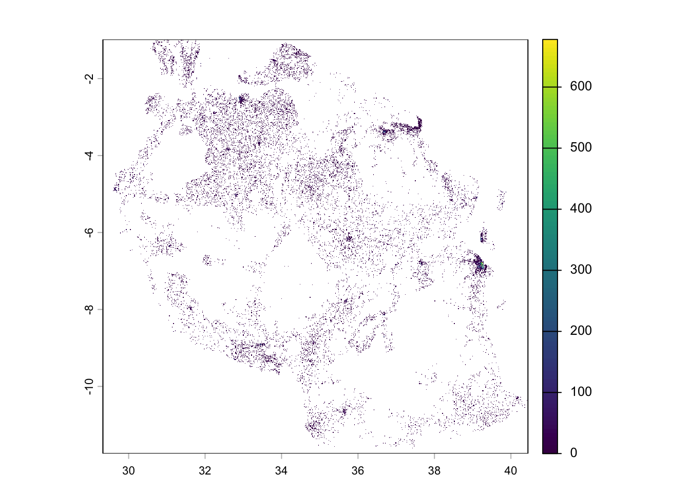
C’est un moyen rapide et pratique de visualiser l’image que vous avez importée. Outre le chargement de rasters dans R à partir d’un téléchargement, certains rasters sont disponibles dans des packages susceptibles d’intéresser les modélisateurs du paludisme.
Nous allons télécharger, à titre d’exemple, une surface représentant le taux de prévalence de Plasmodium falciparum à partir du package malariaAtlas :
# Nous allons d'abord charger le fichier Shapefile de la Tanzanie à partir du package
tz_admin1 <- getShp(
"Tanzania", admin_level = "admin1", version = "202403"
)
# Ensuite, nous allons charger l'ensemble de données PfPR. Cet identifiant
# figé se termine en 2022 ; omettre year évite une incompatibilité connue
# entre certaines versions récentes de R et lubridate.
pfpr_2022 <- getRaster(
dataset_id = "Malaria__202406_Global_Pf_Parasite_Rate",
shp = tz_admin1
)Dans la fonction getRaster, l’argument shp permet d’extraire seulement les cellules du raster qui sont à l’intérieur des polygones constituant les délimitations de région de la Tanzanie.
La même fonction permet d’extraire les données à n’importe quel niveau administratif. La Tanzanie compte 31 régions (mikoa, niveau admin1), elles-mêmes subdivisées en districts (wilaya, niveau admin2). Voyons maintenant comment extraire les données au niveau des districts d’une seule région :
# Téléchargeons les districts (admin2) de la seule région de Mtwara
mtwara_districts <- getShp(
"Tanzania", admin_level = "admin2", version = "202403"
) %>%
filter(name_1 == "Mtwara")
# Réutilisons le raster déjà téléchargé et limitons-le aux districts.
pfpr_2022_mtwara <- crop(pfpr_2022, mtwara_districts) %>%
mask(mtwara_districts)
pfpr_2022_mtwaraclass : SpatRaster
size : 31, 58, 4 (nrow, ncol, nlyr)
resolution : 0.04166667, 0.04166667 (x, y)
extent : 38, 40.41667, -11.41667, -10.125 (xmin, xmax, ymin, ymax)
coord. ref. : lon/lat WGS 84 (EPSG:4326)
source(s) : memory
varname : Malaria__202406_Global_Pf_Parasite_Rate_2022-01-01T00_00_00_-11.7612,29.3414,-0.9844,40.4432
names : Proport~00-2022, Mask: S~pulated, LCI, UCI
min values : 0.100101, NaN, 0.023942, 0.162449
max values : 0.383459, NaN, 0.18761, 0.649625Voilà une autre méthode pour télécharger des rasters. Nous pouvons également visualiser rapidement ces données à l’aide de malariaAtlas ou de terra :
autoplot(pfpr_2022)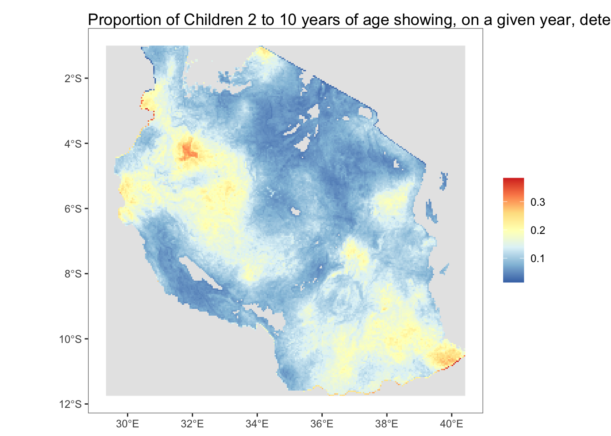
plot(pfpr_2022, main = "PfPR 2-10 en 2022")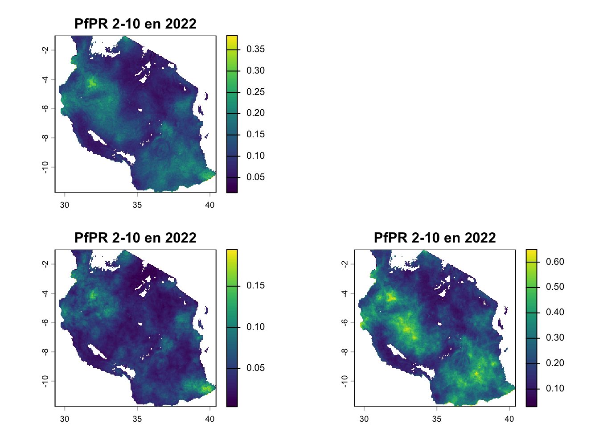
Pour en revenir au raster proprement dit, vous remarquerez que les données comportent plusieurs couches : la prévalence, un masque de population et des intervalles d’incertitude. Nous conserverons ici uniquement la première couche afin de traiter la prévalence comme un raster à bande unique.
pfpr_2022class : SpatRaster
size : 258, 266, 4 (nrow, ncol, nlyr)
resolution : 0.04166667, 0.04166667 (x, y)
extent : 29.33333, 40.41667, -11.75, -0.9999987 (xmin, xmax, ymin, ymax)
coord. ref. : lon/lat WGS 84 (EPSG:4326)
source(s) : memory
varname : Malaria__202406_Global_Pf_Parasite_Rate_2022-01-01T00_00_00_-11.7612,29.3414,-0.9844,40.4432
names : Proport~00-2022, Mask: S~pulated, LCI, UCI
min values : 0.014429, NaN, 0.00386, 0.03052
max values : 0.383459, NaN, 0.194421, 0.649625pfpr_2022 <- pfpr_2022[[1]]
# le nom du raster est extrêmement long, nous allons donc y remédier
names(pfpr_2022) <- "pfpr_2022"Projection/Reprojection
Les données raster, tout comme les données vectorielles, disposent d’un système de coordonnées de référence (SCR). Dans ce tutoriel, tous les rasters sont projetés en WGS 84 (EPSG:4326) qui est notre SCR de référence, et c’est pour cela que nous pouvons les combiner sans reprojection. Il est parfois nécessaire de reprojeter un raster afin de l’aligner sur le SCR d’autres couches spatiales.
Cependant, contrairement aux données vectorielles, les données raster sont constituées d’une grille fixe de cellules. Reprojeter n’est pas une simple transformation affine de cette grille : une projection cartographique est non linéaire, une cellule carrée ne reste généralement pas carrée dans le système de coordonnées cible. Comme un raster doit rester une grille rectangulaire, la reprojection doit construire une nouvelle dans le SCR cible et estimer ses valeurs à partir des anciennes. Cela peut altérer les données, et c’est pourquoi il est préférable d’éviter de reprojeter les rasters sauf en cas de nécessité.
Cela peut cependant s’avérer nécessaire lorsqu’on doit faire des opérations sur un raster et un vecteur qui ne sont pas dans le même SCR (crop, mask et extract échoueraient sans reprojection d’une des couches) ; ou lorsque l’analyse exige des unités métriques (pour une densité en habitants/km², par exemple), il faut un SCR projeté comme l’UTM 35S (EPSG:32735).
Parmi les méthodes de rééchantillonnage courantes lors de la reprojection d’un raster, on trouve la méthode du « plus proche voisin » pour les données catégorielles (par exemple, la couverture du sol) et la méthode « bilinéaire » pour les données continues (par exemple, l’altitude, la température).
Étant donné que la projection d’un raster affecte les valeurs de ses cellules, il est généralement préférable d’éviter de reprojeter des données raster et de privilégier la reprojection des données vectorielles, qui ne subissent aucune distorsion. Voici tout de même comment procéder pour reprojeter un raster.
r <- rast(xmin = -110, xmax = -90, ymin = 40, ymax = 60, ncols = 40, nrows = 40)
values(r) <- 1:ncell(r)
rclass : SpatRaster
size : 40, 40, 1 (nrow, ncol, nlyr)
resolution : 0.5, 0.5 (x, y)
extent : -110, -90, 40, 60 (xmin, xmax, ymin, ymax)
coord. ref. : lon/lat WGS 84 (CRS84) (OGC:CRS84)
source(s) : memory
name : lyr.1
min value : 1
max value : 1600plot(r)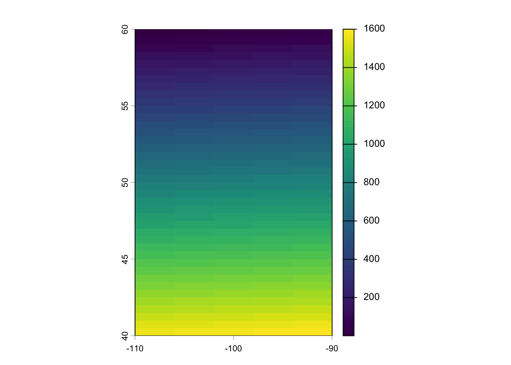
newcrs <- "+proj=robin +datum=WGS84"
pr1 <- terra::project(r, newcrs)
crs(pr1)[1] "PROJCRS[\"unknown\",\n BASEGEOGCRS[\"unknown\",\n DATUM[\"World Geodetic System 1984\",\n ELLIPSOID[\"WGS 84\",6378137,298.257223563,\n LENGTHUNIT[\"metre\",1]],\n ID[\"EPSG\",6326]],\n PRIMEM[\"Greenwich\",0,\n ANGLEUNIT[\"degree\",0.0174532925199433],\n ID[\"EPSG\",8901]]],\n CONVERSION[\"unknown\",\n METHOD[\"Robinson\"],\n PARAMETER[\"Longitude of natural origin\",0,\n ANGLEUNIT[\"degree\",0.0174532925199433],\n ID[\"EPSG\",8802]],\n PARAMETER[\"False easting\",0,\n LENGTHUNIT[\"metre\",1],\n ID[\"EPSG\",8806]],\n PARAMETER[\"False northing\",0,\n LENGTHUNIT[\"metre\",1],\n ID[\"EPSG\",8807]]],\n CS[Cartesian,2],\n AXIS[\"(E)\",east,\n ORDER[1],\n LENGTHUNIT[\"metre\",1,\n ID[\"EPSG\",9001]]],\n AXIS[\"(N)\",north,\n ORDER[2],\n LENGTHUNIT[\"metre\",1,\n ID[\"EPSG\",9001]]]]"plot(pr1)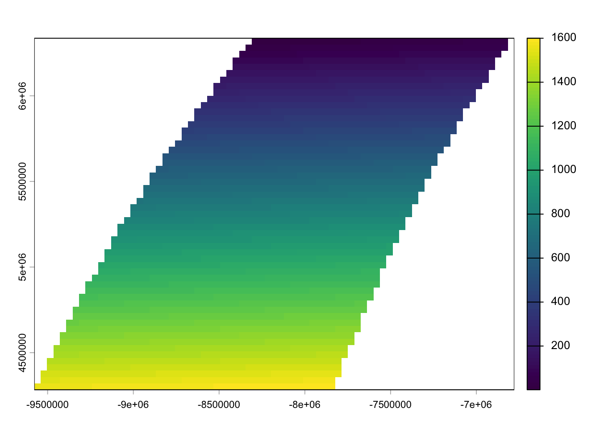
# Définition du SCR cible
# Nous allons utiliser le Web Mercator (WGS 84 / Pseudo-Mercator), standard de la cartographie web
target_crs <- "EPSG:3857"
# Reprojection du raster
projected_population <- project(population, target_crs, method = "bilinear")
|---------|---------|---------|---------|
=========================================
# bilinéaire car nous considérons la population comme une donnée continue
plot(projected_population)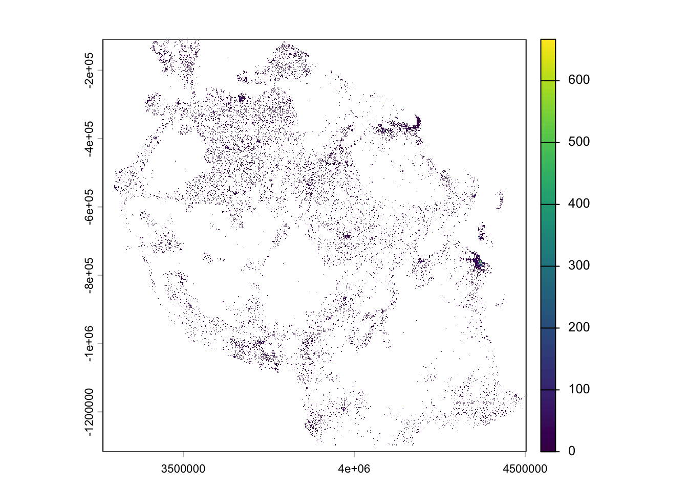
Représentation graphique de données raster
Jusqu’à présent, nous avons vu que nous pouvions représenter graphiquement des données raster à l’aide de la fonction plot issue du package terra. Mais vous voudrez peut-être modifier l’apparence du raster (les couleurs, par exemple) ou regrouper les valeurs en classes. Dans ce cas, mieux vaut représenter les données avec ggplot. C’est ce que nous allons faire avec notre surface de prévalence parasitaire :
ggplot() +
geom_raster(data = pfpr_2022, mapping = aes(x = x, y = y, fill = pfpr_2022)) +
coord_equal()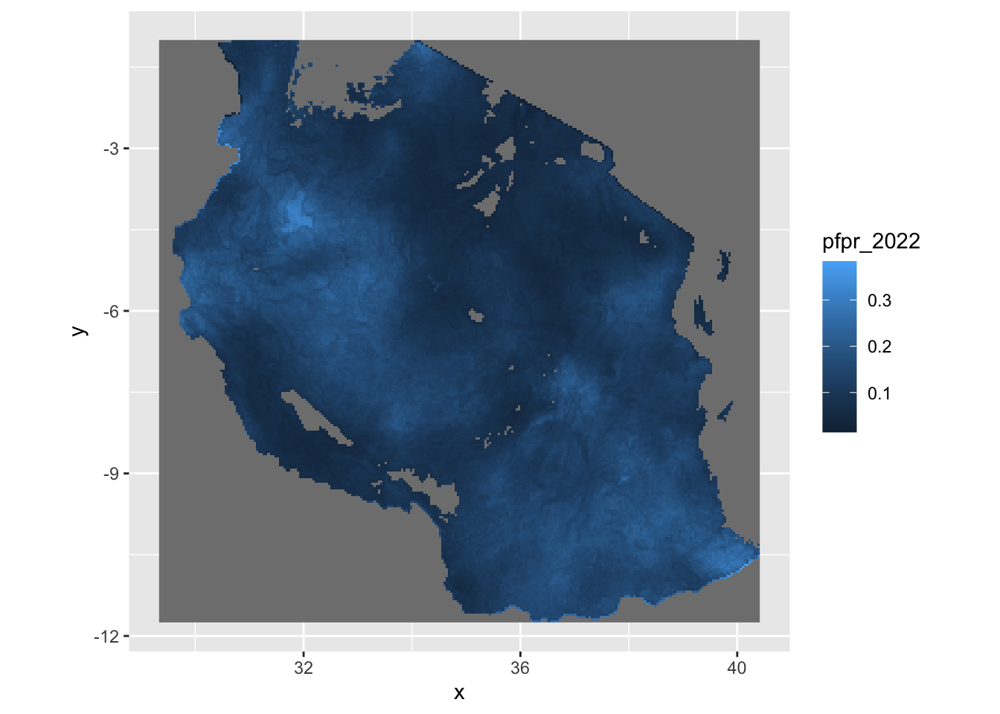
geom_raster ou geom_tile sont les deux principales fonctions de ggplot permettant de visualiser des données raster ou quadrillées. En règle générale, avec l’une ou l’autre de ces fonctions, vous devrez fournir les coordonnées x et y ainsi que la valeur à attribuer à chaque cellule pour que le tracé s’effectue correctement. Vous devrez également inclure la couche supplémentaire permettant de gérer les coordonnées, appelée coord_equal. Lorsque vous ajoutez des fichiers Shapefile au format sf, vous pouvez opter pour coord_sf afin que le logiciel sache comment traiter correctement les coordonnées. Essayez de voir à quoi ressemble l’image lorsque vous ne l’indiquez pas.
D’autre part, la fonction geom_spatraster provenant du package tidyterra constitue le moyen le plus rapide et le plus simple de tracer un raster dans ggplot ; nous utiliserons principalement geom_spatraster à partir de maintenant, car avec cette dernière nous n’aurons alors plus besoin d’inclure d’informations supplémentaires sur les coordonnées x et y. D’après le graphique ci-dessus, vous pouvez constater que le rendu par défaut n’est pas particulièrement esthétique ; rendons-le donc plus agréable à l’œil :
ggplot(tz_admin1) +
geom_sf() +
geom_spatraster(data = pfpr_2022, mapping = aes(fill = pfpr_2022)) +
geom_sf(fill = NA) +
scale_fill_distiller(palette = "RdYlGn", na.value = "transparent") +
theme_void() +
labs(title = "Plasmodium falciparum 2-10 pour 2022", fill = "PfPR")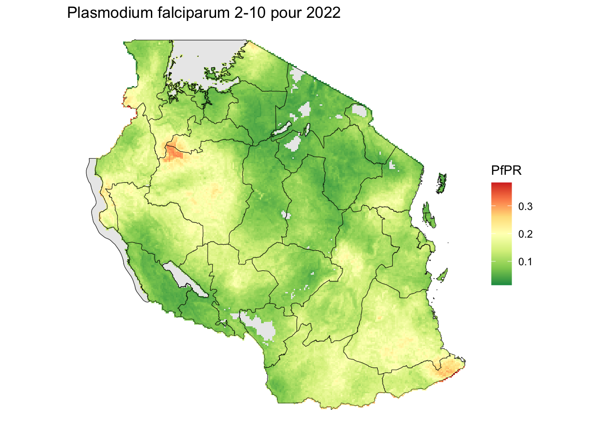
# Définition de la palette de couleurs (5 classes = 5 couleurs)
pfpr_pal <- brewer.pal(n = 5, name = "RdYlGn")
pfpr_pal <- rev(pfpr_pal) # inverser pour que les valeurs faibles soient en vert
# Définir les seuils
pfpr_breaks <- c(0, 0.05, 0.1, 0.2, 0.3, 1)
ggplot() +
geom_spatraster(data = pfpr_2022, aes(fill = pfpr_2022)) +
geom_sf(data = tz_admin1, fill = NA) +
scale_fill_stepsn(
colours = pfpr_pal, breaks = pfpr_breaks, na.value = "transparent"
) +
theme_void() +
labs(title = "Plasmodium falciparum 2-10 pour 2022", fill = "PfPR")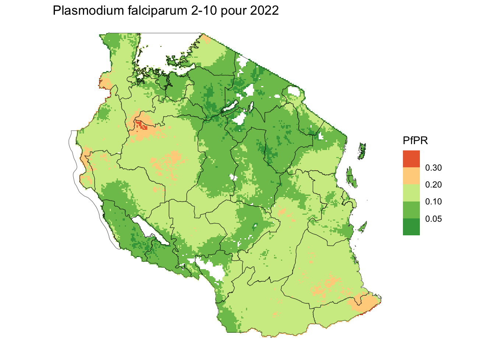
Mise en gardeASTUCE : DÉFI N° 1 : créez un graphique représentant la population
Essayez de créer la même carte que ci-dessus, mais en utilisant le raster population à la place.
Quelle palette de couleurs permettrait de rendre ce graphique plus représentatif ?
Pourriez-vous éventuellement modifier l’échelle des valeurs pour passer à une échelle logarithmique de base 10 ?
⚠ Solution non incluse ici, voir le dépôt GitHub du hackathon.
Manipulation des rasters
Nous pouvons déterminer l’étendue spatiale d’un raster à l’aide de la fonction ext, et découper facilement le raster à d’autres étendues à l’aide de crop. Nous pouvons spécifier les coordonnées auxquelles nous souhaitons découper le raster, ou bien récupérer l’étendue d’un objet spatial et découper le raster en fonction de celle-ci.
ext(pfpr_2022)SpatExtent : 29.3333333333333, 40.4166666666666, -11.7499987284343, -0.999998728434268 (xmin, xmax, ymin, ymax)pfpr1 <- crop(pfpr_2022, c(35, 40, -8, -6)) # c(xmin, xmax, ymin, ymax)
plot(pfpr1)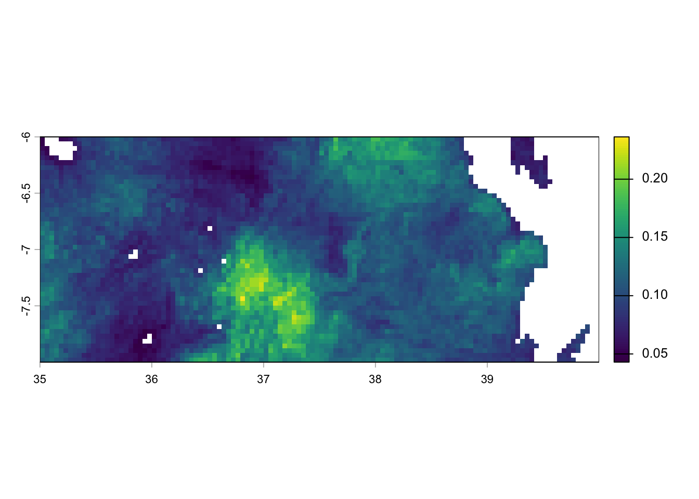
# découper la prévalence du paludisme pour ne conserver que Mtwara
mtwara <- filter(tz_admin1, name_1 == "Mtwara")
mtwara_pfpr <- crop(pfpr_2022, mtwara)
plot(mtwara_pfpr)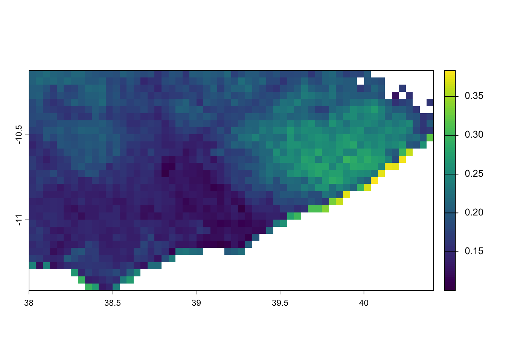
Vous souhaiterez peut-être ensuite attribuer la valeur NA à toutes les cellules raster situées en dehors du polygone correspondant à la région de Mtwara. Pour ce faire, vous pouvez utiliser la fonction mask.
# masquer la prévalence du paludisme pour ne conserver que Mtwara
mtwara <- filter(tz_admin1, name_1 == "Mtwara")
mtwara_pfpr <- crop(pfpr_2022, mtwara) %>% mask(mtwara)
# il est recommandé de découper au préalable pour définir de nouvelles limites
plot(mtwara_pfpr)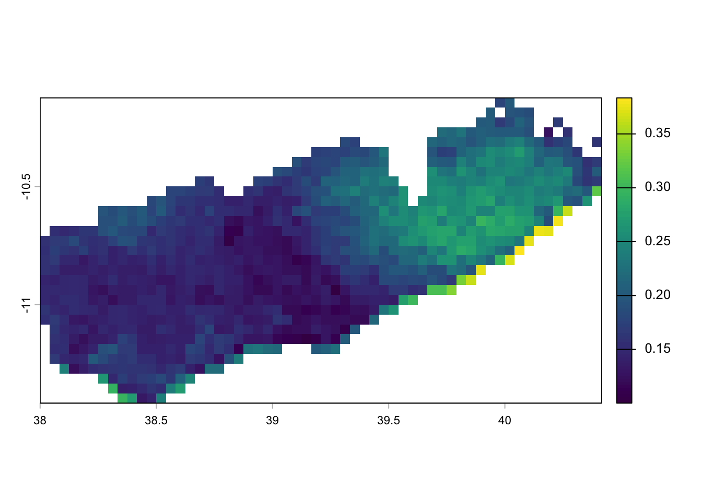
Lors du masquage, il convient de garder à l’esprit que la fonction mask ne permet pas de définir les limites ; il est donc préférable de commencer par découper puis d’appliquer le masque.
Agrégation/Rééchantillonnage
Comme vous l’avez remarqué, le raster de population présente une très haute résolution (100 m), ce qui peut compliquer sa visualisation ; il peut donc être judicieux d’agréger les rasters.
population_1km <- aggregate(population, fact = 10, fun = "sum", na.rm = TRUE)
|---------|---------|---------|---------|
=========================================
plot(population_1km)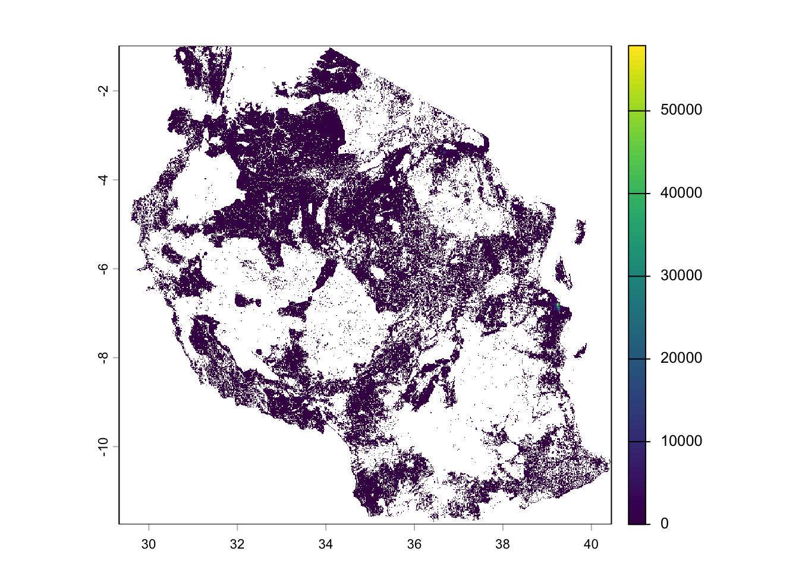
Vous pouvez désagréger à l’aide de la fonction disagg, mais vous devrez faire preuve de prudence, car il vous faudra utiliser les méthodes « near » ou « bilinear » pour interpoler dans des cellules plus petites. Cela pourrait fausser les informations du raster à votre insu.
Calculs sur les rasters
Avec plusieurs rasters, vous pouvez également effectuer des calculs simples. L’un d’entre eux pourrait s’avérer utile si vous souhaitez calculer la population exposée au risque de paludisme. Il convient de garder à l’esprit que les rasters doivent avoir la même étendue. Nous pouvons utiliser la fonction resample pour les aligner :
# vérifier que les étendues correspondent
ext(population_1km) == ext(pfpr_2022)[1] FALSE# si elles ne correspondent pas, utilisez "resample" pour les harmoniser
population_1km_resamp <- resample(population_1km, pfpr_2022)
# nous pouvons désormais multiplier les données de population et de
# prévalence pour obtenir la population exposée au risque
pop_at_risk <- population_1km_resamp * pfpr_2022
names(pop_at_risk) <- "population_at_risk"
# La transformation logarithmique ne peut pas représenter les cellules nulles.
pop_at_risk <- ifel(pop_at_risk == 0, NA, pop_at_risk)
names(pop_at_risk) <- "population_at_risk"
ggplot() +
geom_raster(pop_at_risk, mapping = aes(x = x, y = y, fill = population_at_risk)) +
geom_sf(tz_admin1, mapping = aes(geometry = geometry), fill = NA) +
scale_fill_viridis_c(option = "B", trans = "log10", na.value = "transparent") +
theme_void() +
coord_sf() +
labs(title = "Population à risque en 2022", fill = "Population")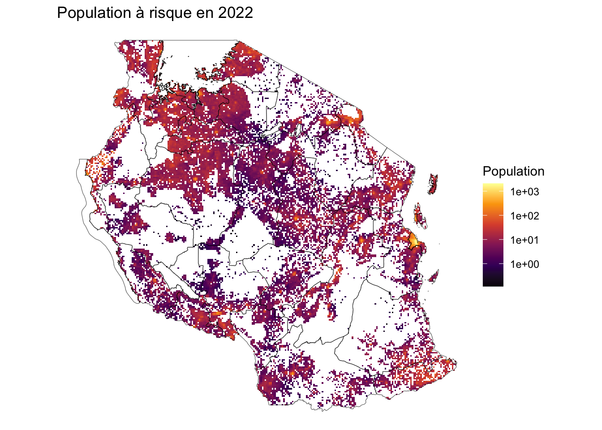
Avant de tracer la carte, nous avons remplacé les cellules nulles par NA, car le logarithme décimal de zéro vaut moins l’infini. Ces cellules restent transparentes et n’affectent pas les sommes calculées ensuite.
Mise en gardeASTUCE : DÉFI N° 2 : convertir la prévalence en pourcentage
Pouvez-vous essayer de manipuler le raster pfpr_2022 pour le présenter sous forme de pourcentage ?
Créez un graphique du nouveau raster pfpr_2022 sous forme de pourcentage.
Pouvez-vous essayer de le classer par catégories ?
⚠ Solution non incluse ici, voir le dépôt GitHub du hackathon.
Extraction d’informations
Nous pourrions vouloir résumer les rasters au niveau des régions, c’est-à-dire nous calculons la somme des valeurs dans les cellules à l’intérieur de chaque région avec sum. Nous pouvons le faire à l’aide de la fonction extract :
pop_risk <- terra::extract(pop_at_risk, vect(tz_admin1), sum, na.rm = TRUE, ID = FALSE)
tz_admin1 <- bind_cols(tz_admin1, pop_risk)
ggplot(tz_admin1) +
geom_sf(mapping = aes(fill = population_at_risk)) +
scale_fill_distiller(palette = "Reds", direction = 1, trans = "log10", na.value = "lightblue") +
theme_void()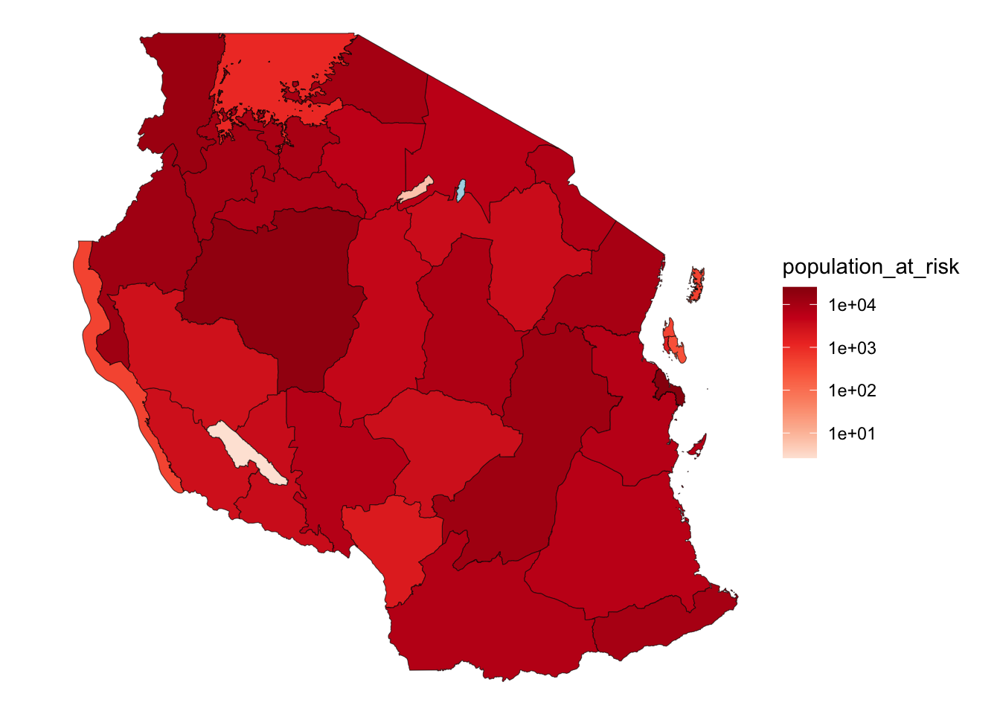
Mise en gardeASTUCE : DÉFI N° 3 : extraire davantage d’informations
Pouvez-vous extraire les valeurs de pfpr_2022 seules et de population séparément ?
Obtenez-vous une valeur différente si vous utilisez population à 100 m par rapport à population_1km à 1 km ?
Pouvez-vous expliquer pourquoi ?
⚠ Solution non incluse ici, voir le dépôt GitHub du hackathon.
Pour aller plus loin : d’autres opérations sur les rasters
La fonction extract résume les cellules situées à l’intérieur de polygones fournis de l’extérieur. Le package terra propose d’autres opérations qui, elles, travaillent directement sur la grille et renvoient un nouveau raster :
focal() : calcule une statistique sur le voisinage de chaque cellule. Avec w = 3, la fenêtre couvre la cellule centrale et ses 8 voisines ; on peut notamment l’utiliser pour lisser une surface avant de l’utiliser comme covariable.
Cas pratique : lisser la surface de prévalence pour atténuer le bruit cellule à cellule avant de l’utiliser comme covariable. na.policy = "omit" laisse les cellules NA (hors du pays) inchangées au lieu de les remplir, et na.rm = TRUE ignore les voisines manquantes en bordure de côte.
pfpr_lisse <- focal(pfpr_2022, w = 3, fun = "mean", na.policy = "omit", na.rm = TRUE)
names(pfpr_lisse) <- "pfpr_lisse"
plot(c(pfpr_2022, pfpr_lisse), main = c("PfPR brut", "PfPR lissé (3 × 3)"))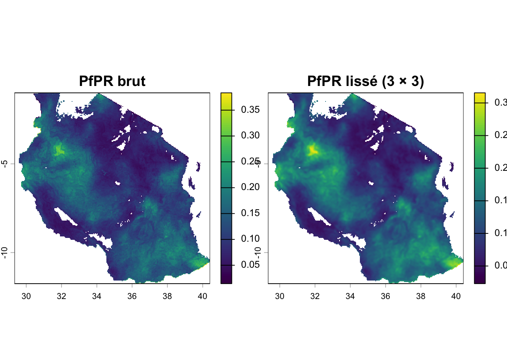
terrain() : dérive la pente, l’exposition ou la rugosité à partir d’un modèle numérique de terrain.
Cas pratique : dériver la pente et la rugosité du relief, deux covariables classiques pour l’écologie des vecteurs. Les données du tutoriel ne contiennent pas d’altitude, nous utilisons donc le MNT d’exemple livré avec terra. Pour la Tanzanie, geodata::elevation_30s(country = "TZA") fournit l’équivalent.
mnt <- rast(system.file("ex/elev.tif", package = "terra"))
pente <- terrain(mnt, v = "slope", unit = "degrees")
rugosite <- terrain(mnt, v = "TRI")
plot(c(pente, rugosite), main = c("Pente (degrés)", "Rugosité (TRI)"))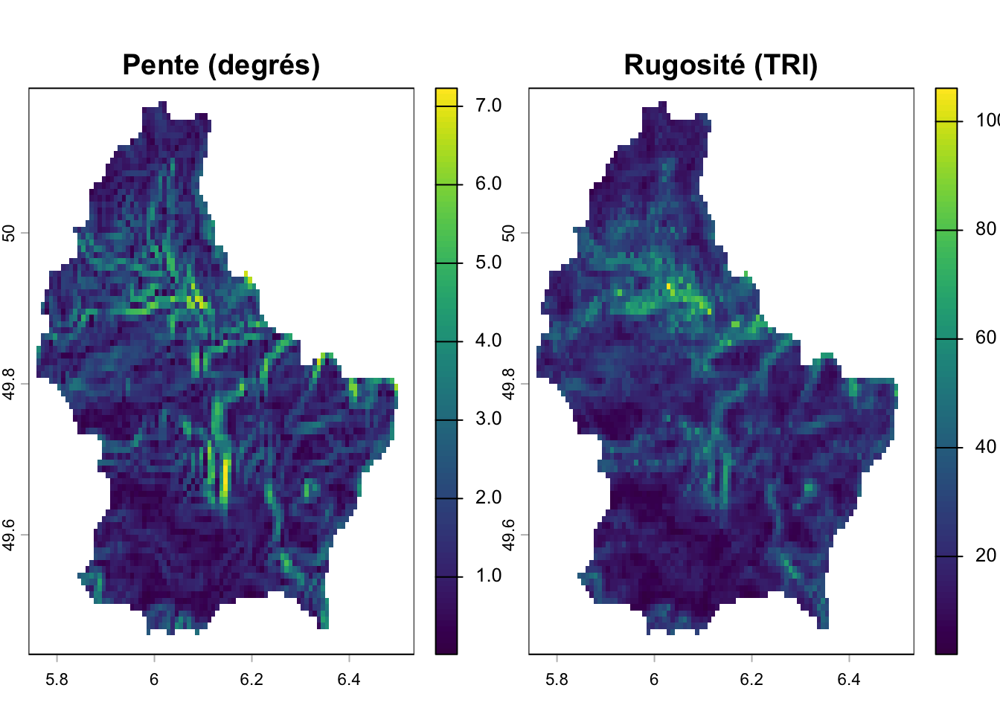
Attention à l’unité : sur un raster en longitude/latitude, terrain() suppose que les altitudes sont en mètres.
distance() : calcule, pour chaque cellule, la distance jusqu’à la cellule non-NA la plus proche. Pratique pour construire une covariable « distance au plan d’eau le plus proche », par exemple.
Cas pratique : construire une covariable « distance à la zone de forte prévalence la plus proche ». On isole d’abord les cellules dépassant 30 % de prévalence, tout le reste passant à NA ; distance() renseigne alors ces cellules NA. Le résultat couvre toute l’emprise rectangulaire, y compris l’océan, d’où le mask() final.
foyers <- ifel(pfpr_2022 > 0.3, 1, NA)
dist_foyers <- distance(foyers, unit = "km")
dist_foyers <- mask(dist_foyers, pfpr_2022)
names(dist_foyers) <- "distance_foyer_km"
plot(dist_foyers, main = "Distance au foyer le plus proche (km)")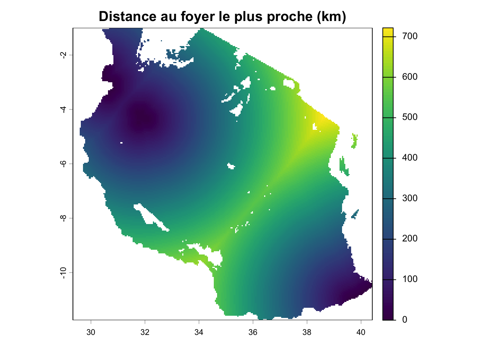
Le SCR étant en longitude/latitude, distance() raisonne en mètres ; unit = "km" convertit directement le résultat.
La documentation sur ces fonctions est accessible directement depuis R. Tapez ?focal dans la console pour découvrir les arguments disponibles et les exemples fournis.
Données multibandes
J’ai déjà mentionné que le package terra dans R permet de traiter plusieurs bandes ou couches de rasters. Nous pouvons donc charger plusieurs rasters simultanément et effectuer des calculs sur ceux-ci de la même manière, ce qui est formidable ! Pour effectuer certaines opérations entre plusieurs rasters, ceux-ci doivent notamment avoir une géométrie compatible, avec une étendue, une résolution et un système de coordonnées appropriés. Nous allons ici charger des données issues de CHIRPS concernant les précipitations mensuelles en 2022.
# Tout d'abord, nous créons une liste de toutes les images raster provenant de CHIRPS
rainfall_rasters <- list.files(
path = "../../04_mapping_r_part2/data/rasters/", pattern = "chirps", full.names = TRUE
)
# Ensuite, nous les chargeons dans R de la même manière que pour une seule bande
rainfall_2022 <- rast(rainfall_rasters)
rainfall_2022class : SpatRaster
size : 258, 267, 12 (nrow, ncol, nlyr)
resolution : 0.04166667, 0.04166667 (x, y)
extent : 29.33333, 40.45833, -11.75, -1 (xmin, xmax, ymin, ymax)
coord. ref. : lon/lat WGS 84 (EPSG:4326)
sources : chirps-v2-0.2022.01.sum.5km.NN.tif
chirps-v2-0.2022.02.sum.5km.NN.tif
chirps-v2-0.2022.03.sum.5km.NN.tif
... and 9 more sources
names : chirp~km.NN, chirp~km.NN, chirp~km.NN, chirp~km.NN, chirp~km.NN, chirp~km.NN, ...
min values : 20.051249, 10.480678, 9.421162, 4.000703, 0.041401, 0, ...
max values : 944.622925, 671.34375, 610.169739, 804.803101, 403.897919, 224.631592, ...Vous constaterez que les métadonnées indiquent que 12 couches (nlyr dans dimensions) ont été chargées et que chaque couche correspond à un mois de précipitations. Nous pouvons tracer ces données pour voir à quoi cela ressemble :
plot(rainfall_2022)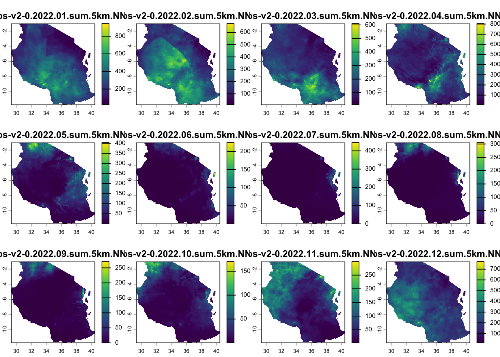
Ce qui est pratique, c’est que les 12 couches sont tracées simultanément, mais avec des échelles libres. Nous pouvons également utiliser ggplot pour obtenir le même résultat :
# Commençons par nettoyer les noms, en les transformant en dates
names(rainfall_2022) <- seq(
as.Date("2022-01-01"), as.Date("2022-12-01"), by = "months"
) %>%
format("%b %Y")
ggplot() +
geom_spatraster(data = rainfall_2022) +
facet_wrap(~lyr, ncol = 4) +
scale_fill_distiller(palette = "Blues", direction = 1, na.value = "transparent", trans = "sqrt") +
theme_void() +
labs(fill = "mm", title = "Précipitations")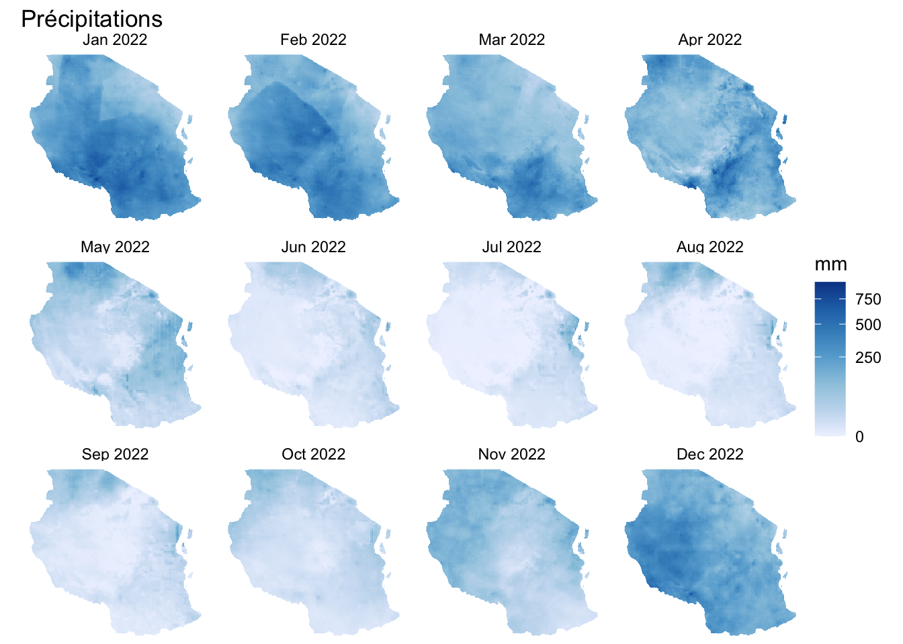
Mise en gardeASTUCE : DÉFI N° 4 : traitement des précipitations
Pouvez-vous extraire la somme des précipitations dans chaque région de Tanzanie pour chaque mois ?
Créez un graphique illustrant la répartition des précipitations par région et par mois.
⚠ Solution non incluse ici, voir le dépôt GitHub du hackathon.
Rastérisation
Vous pouvez parfois avoir besoin de convertir des données vectorielles en données raster. Ce processus s’appelle la rastérisation. Pour que cette opération fonctionne, vous devez disposer d’un raster de référence que vous souhaitez utiliser afin de lui fournir la résolution, le SCR et les limites.
rasterise_pop_risk <- rasterize(tz_admin1, field = "population_at_risk", pop_at_risk)
plot(rasterise_pop_risk)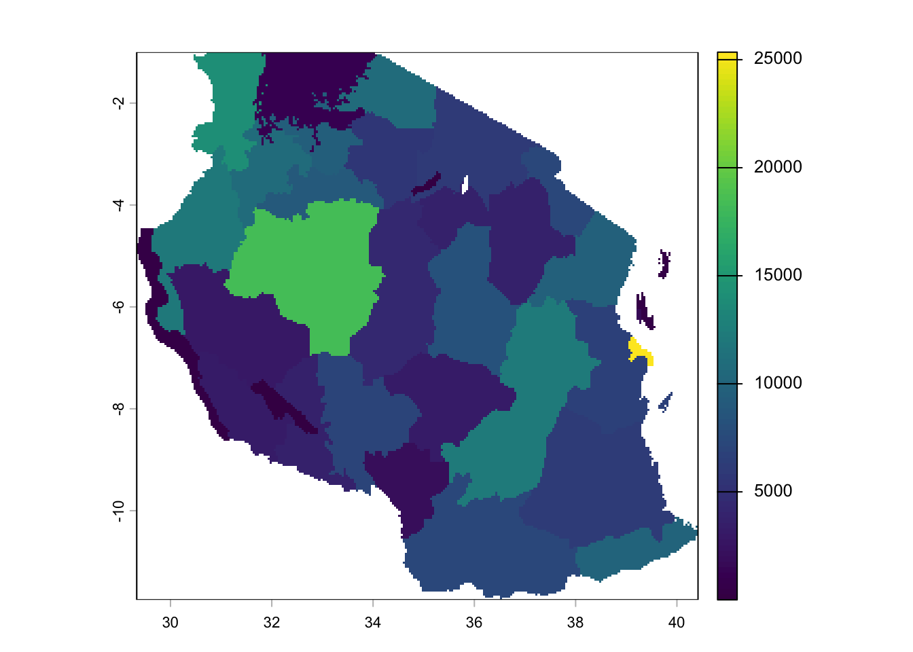
Exportation de données raster
Utilisez writeRaster pour sauvegarder des données raster. Vous devez fournir un objet SpatRaster et un nom de fichier. Le format du fichier sera déduit à partir de l’extension du nom de fichier. Si cela ne fonctionne pas, vous pouvez fournir un argument tel que format=GTiff. Notez que l’argument overwrite=TRUE permet de remplacer un fichier préalable portant un même nom. Vous pouvez également consulter ?writeRaster pour découvrir d’autres arguments, tels que datatype= permettant de définir un type de données spécifique (par exemple, entier).
writeRaster(
pop_at_risk, "../../04_mapping_r_part2/data/rasters/population_risk_2022.tif", overwrite = TRUE
)Sources de données raster pour la modélisation
Dans ce tutoriel, il ne vous a été présenté que deux sources d’informations provenant de WorldPop et de MAP, mais il existe principalement d’autres sources utiles pour obtenir d’autres types de rasters, comme des covariables environnementales :
WorldClim est une excellente ressource proposant des rasters bioclimatiques prêts à l’emploi. Ceux-ci incluent des données historiques (1970-2000) et futures (jusqu’en 2100) et sont traités à partir de modèles climatiques mondiaux avec certains scénarios SSP (Shared Socio-economic Pathways, ou Trajectoires socio-économiques partagées). Ces données sont également disponibles en différentes résolutions, en fonction de votre analyse.
Google Earth Engine : propose de nombreuses données raster pré-traitées, telles que celles de MODIS (NASA) (température, EVI, couverture végétale), ainsi que certains produits MAP. On y trouve également des données très intéressantes, comme les données d’emprise bâtie de Google.
VectorAtlas : un excellent site pour trouver des données compilées sur les vecteurs, ainsi que certaines des cartes de répartition des vecteurs déjà publiées. De nouvelles cartes d’adéquation environnementale y seront mises en ligne très prochainement ; une ressource incontournable pour tous les modélisateurs à la recherche de données sur les vecteurs.
Estimations de la charge de morbidité de l’IHME : certaines données raster relatives à différentes maladies et à la mortalité y sont publiées ; elles peuvent constituer une bonne ressource non seulement pour le paludisme, mais aussi pour analyser les tendances en matière de mortalité.
Télécharger ces données directement depuis R
Vous avez déjà utilisé le package malariaAtlas dans ce tutoriel pour télécharger le raster PfPR sans passer par un site web. D’autres packages jouent le même rôle à savoir :
geodata : successeur de la fonction
getData()de l’ancien packageraster. Il donne accès à WorldClim (worldclim_country(),worldclim_global()), aux projections climatiques CMIP6, à la densité de population, à l’altitude, à la couverture du sol, au temps de trajet vers la ville la plus proche, ainsi qu’aux limites administratives GADM. C’est probablement le plus utile des trois pour constituer un jeu de covariables environnementales à utiliser à des fins de modélisation.chirps : client de l’API du Climate Hazards Center. Il permet de télécharger les rasters de précipitations CHIRPS et de températures CHIRTS, soit sous forme de valeurs extraites pour des points ou des polygones, soit directement sous forme d’objets
SpatRaster. C’est l’alternative programmatique aux fichiers CHIRPS que nous avons chargés manuellement plus haut.rgee : permet de piloter Google Earth Engine depuis R. Beaucoup plus puissant, mais aussi beaucoup plus exigeant. Pour l’utiliser il faut un compte GEE, une installation Python et une étape d’authentification. C’est à réserver aux besoins que les deux premiers ne couvrent pas.
L’intérêt de télécharger ces données directement depuis R dépasse le simple confort. Lorsque le téléchargement fait partie du script, votre analyse devient reproductible : n’importe qui peut la relancer de bout en bout sans avoir à retrouver les bons fichiers sur les bons portails.
Ressources supplémentaires
L’introduction de Carpentries aux données géospatiales raster et vectorielles sous R est un excellent tutoriel qui a largement inspiré le contenu de ce hackathon. N’hésitez pas à l’essayer !
La formation MAP constitue la base sur laquelle ces notes ont été élaborées et contient bien plus d’informations que celles relatives aux seules données raster.
Le package terra met en avant des possibilités encore plus intéressantes que vous pouvez exploiter avec les rasters sous R, au-delà de ce que nous pouvons aborder ici ; il vaut donc vraiment le détour pour les passionnés !
AstuceASTUCE : DÉFI « DONNÉES SUPPLÉMENTAIRES » TIDYTUESDAY
Pour les passionnés qui souhaiteraient s’essayer à la création de rasters encore plus intéressants, voici un défi « tidytuesday » : cartographier les jours fériés et les voyages dans le monde, avec l’aimable autorisation de WorldPop.
Pour découvrir d’autres défis ludiques et vous entraîner de manière générale à l’utilisation de R, essayez tidytuesday sur GitHub (rfordatascience/tidytuesday).
Assistants IA : accélérateur utile pour l’utilisation des données rasters sous R
Les assistants conversationnels (ChatGPT, Claude, Gemini, ou l’assistant intégré à des environnements comme Positron) sont devenus des compagnons de débogage efficaces pour le codage. Encore faut-il savoir les solliciter : la qualité de la réponse dépend presque entièrement de la qualité du contexte fourni.
Quatre réflexes qui changent tout :
Collez la sortie de
print()de votre objet, plutôt que de le décrire. Les métadonnées d’unSpatRaster(dimensions, résolution, étendue, SCR, noms de couches) contiennent exactement ce dont l’assistant a besoin pour diagnostiquer un problème spécifique. « Mon raster ne se superpose pas au shapefile » ne mène nulle part ; les deux blocs de métadonnées collés côte à côte, si.Collez le message d’erreur en entier, y compris les lignes ‘Caused by error’ et les avertissements qui précèdent. Ces messages des packages
terraetsfsont souvent cryptiques mais très informatifs.Nommez le package visé. Sans précision, les assistants mélangent volontiers
terra, l’ancienraster,sfetspdans une même réponse, voire proposent du codergdalqui est un package déjà retiré de CRAN. Pour mieux clarifier vos attentes, il est donc nécessaire d’ajouter explicitement des précisions comme « avec terra » ou « avec sf uniquement » afin de mieux orienter les réponses des assistants IA.Demandez toujours une explication, pas seulement du code. « Explique-moi pourquoi cette solution fonctionne » vous fait progresser, alors que du code copié-collé sans compréhension vous laissera bloqué au problème suivant.
Trois exemples de formulations qui donnent de bons résultats :
« Voici les métadonnées de deux
SpatRaster[coller les deux sorties]. Je veux les multiplier mais j’obtiens une erreur d’étendue. Avec terra uniquement, comment les aligner, et quelle méthode de rééchantillonnage choisir pour des données de population ? »« J’ai un
SpatRasteren EPSG:4326 et un objetsfen EPSG:32735. Faut-il reprojeter le raster ou le vecteur avant d’utiliserextract? Explique le raisonnement. »« Voici mon code ggplot [coller le bloc] et l’erreur obtenue [coller l’erreur]. Corrige-le en utilisant
geom_spatrasterde tidyterra, et dis-moi ce qui n’allait pas. »
Pour finir, sachez que ces outils inventent régulièrement des arguments, des fonctions ou des noms de packages qui n’existent pas. Ils sont par ailleurs entraînés sur beaucoup de code ancien, donc vérifiez systématiquement ce que ces outils vous proposent. Par exemple, saisissez ?nom_de_fonction dans la console pourra vous permettre de confirmer en une seconde qu’une fonction existe réellement et que les suggestions d’arguments pour une IA sont bonnes. Car un assistant IA est un accélérateur, jamais une source d’autorité.